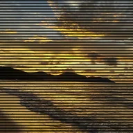

स्कैनलाइन्स

CRT मॉनिटर जैसा इफ़ेक्ट देने के लिए हॉरिज़ॉन्टल स्कैनलाइन्स जोड़ता है, साथ में वर्टिकल रोलिंग भी।
सेटिंग्स
| सेटिंग | प्रकार | रेंज | डिफ़ॉल्ट |
|---|---|---|---|
| लाइन स्पेसिंग | संख्या | 2 से 20 | 6 |
| डार्कनेस | संख्या | 0 से 1 | 0.4 |
| रोल स्पीड | संख्या | 0 से 2 | 0.3 |

CRT मॉनिटर जैसा इफ़ेक्ट देने के लिए हॉरिज़ॉन्टल स्कैनलाइन्स जोड़ता है, साथ में वर्टिकल रोलिंग भी।
| सेटिंग | प्रकार | रेंज | डिफ़ॉल्ट |
|---|---|---|---|
| लाइन स्पेसिंग | संख्या | 2 से 20 | 6 |
| डार्कनेस | संख्या | 0 से 1 | 0.4 |
| रोल स्पीड | संख्या | 0 से 2 | 0.3 |